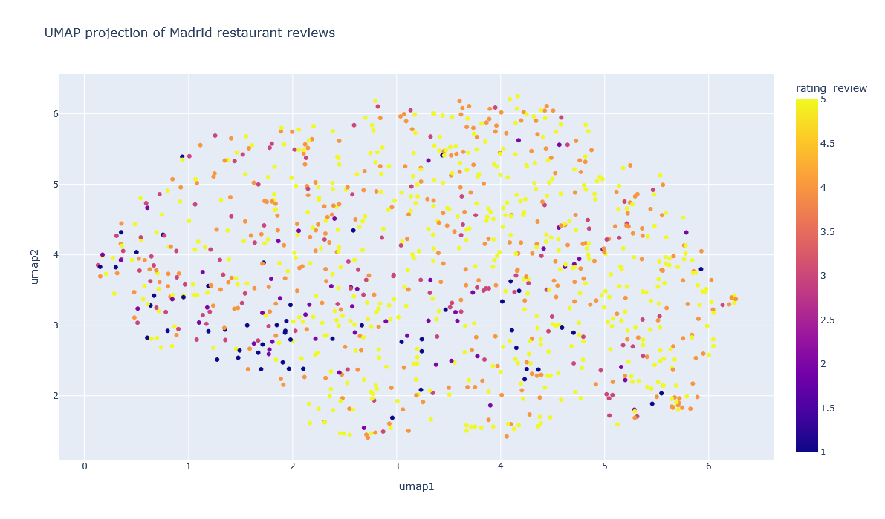

Word Embeddings and Document representations#
Word Vectors: Word2Vec and Co#
In the previous chapters (Computing with Text: Counting words and Beyond Counting Individual Words: N-grams), we worked with Tfidf vectors to represent text. This is a rather basic, but still often used, technique. Arguably, this is because they are based on relatively simple statistics and easy to compute. They typically do a good job in weighing words according to their importance in a larger corpus and allow us to ignore words with low distriminative power (for instance so-called stopwords such as “a”, “the”, “that”).
With n-grams (Beyond Counting Individual Words: N-grams) we can even go one step further and also count sentence pieces longer than one word. With n-grams our models can identify important word combinations such as negations (“do not like”), comparatives, or specific expressions (“the best”) into account. The price, however, is that we have to restrict the number of n-grams to avoid exploding vector sizes.
TF-IDF vectors and n-grams often work surprisingly well for simpler tasks such as sentiment analysis. But this approach also has severe limitations, mostly because it treats words, or tiny groups of words, as individual, isolated units, ignoring any context or relation to other words. This makes it impossible to capture the semantic meanings of words and the linguistic context in which they are used.
Take these two sentences as an example:
(1) The customer likes cake with a cappuccino.
(2) The client loves to have a cookie and a coffee.
We will immediately identify that both sentences speak of very similar things. But if you look at the words in both sentences, you will realize that only “The” and “a” are found in both. And, as we have seen in the tfidf-part, such words tell very little about the sentence content. All other words, however, only occur in one or the other sentence. TF-IDF vectors would compute a zero similarity here.
This is where we come to word vectors. Word vectors, also known as word embeddings, are mathematical representations of words in a high-dimensional space where the semantic similarity between words corresponds to the geometric distance in the embedding space. Simply put, similar words are close together, and dissimilar words are farther apart. If done well, this should show that “cookie” and “cake” are not the same word, but mean something very related.
The most prominent example of such a technique is Word2Vec [Mikolov et al., 2013][Mikolov et al., 2013].
Word2Vec#
The fundamental idea behind Word2Vec is to use the context in which words appear to learn their meanings. As shown in the Fig. 43, a sliding window of a fixed size (here, 5) moves over the sentence
“The customer likes cake with a cappuccino.”
At each position, the algorithm selects the central word as target and treats the remaining words in the window as its context. For example, in the phrase “the customer likes,” the target word is “the,” and the context words are “customer” and “likes.” This process is repeated for each possible position in the sentence.
These word-context pairs are fed into the Word2Vec model, which learns to map each word to a unique vector in such a way that words appearing in similar contexts have similar vectors. This vector representation captures semantic similarities, meaning that words with similar meanings or usages are positioned closer together in the vector space. Word2Vec thereby enables various applications such as sentiment analysis, machine translation, and recommendation systems by providing a mathematical representation of words that reflects their meanings and relationships.

Fig. 43 Techniques such as Word2Vec learn vector representations of individual words based on their “context”, which is given by the neighboring words.#
Word2Vec models can be trained using two main methods: Continuous Bag of Words (CBOW) and Skip-Gram. In CBOW, the model predicts a target word based on its surrounding context words, focusing on understanding the word’s context to infer its meaning (see Fig. 44). Conversely, the Skip-Gram model predicts the surrounding context words given a target word, emphasizing the ability to generate context from a single word [Mikolov et al., 2013][Mikolov et al., 2013].

Fig. 44 The aim of a Word2Vec model is typically to learn vector representations of individual words based on some context words. This is done in such a way that the very large (and very sparse) input vectors are converted into highly compressed float vectors. In this example figure, the context words are “cherry”, “is”, “and”, “sweet”, and the target word would be “red”.#
import os
import numpy as np
import pandas as pd
import matplotlib.pyplot as plt
import seaborn as sb
# Set the ggplot style
plt.style.use("ggplot")
File ../datasets/reviews_madrid_40k.csv already exists. Skipping download.
filename = "../datasets/reviews_madrid_40k.csv"
data = pd.read_csv(filename)
data.head()
| rating_review | title_review | review_full | date | city | |
|---|---|---|---|---|---|
| 0 | 2 | Friendly fakey | 'Vegetable Korma' was really just a bland yell... | March 12, 2013 | Madrid |
| 1 | 5 | Great value & home made. | A typical restaurant/bar very popular with loc... | February 15, 2018 | Madrid |
| 2 | 3 | Great salmon! Big serving. | Though the place looks a bit old and some of t... | September 27, 2013 | Madrid |
| 3 | 2 | Apauling management | My boyfriend and I came here for a birthday lu... | September 10, 2015 | Madrid |
| 4 | 2 | Poor Service, paella was not prepared properly... | It is almost impossible to get a bad meal in M... | October 6, 2015 | Madrid |
data.shape
(40000, 5)
As we can see, we have a pretty extensive dataset with many different restaurant reviews, our documents (review_full), as well as ratings (rating_review). We will use both of them in the following part. Let’s first check a few random examples of our reviews, just to get a first idea of how the data looks like.
data.review_full.iloc[0]
"'Vegetable Korma' was really just a bland yellow curry?frozen peas & carrots, turmeric, milk, maybe a bit of onion. Papadums OK. Others said other dishes were fine. But all lacked the odors of the many spices I've come to expect from India."
import nltk
tokenizer = nltk.tokenize.TreebankWordTokenizer()
stemmer = nltk.stem.WordNetLemmatizer()
def process_document(doc):
"""Convert document to lemmas."""
tokens = tokenizer.tokenize(doc)
tokens = [x.strip(".,;:!? ").lower() for x in tokens]
tokens = [x for x in tokens if x != ""]
return [stemmer.lemmatize(w) for w in tokens]
The entire text will be divided into sentences, that will be our “documents” in Word2vec terms. To reduce the computation time we will only use a fraction of the sentences, but feel free to repeat the following code parts with all sentences.
from tqdm.notebook import tqdm
sentences = [process_document(doc) for doc in tqdm(data.review_full.values)]
len(sentences)
40000
Let’s inspect how our documents, or sentences, actually look like after the data processing:
print(sentences[0])
["'vegetable", 'korma', "'", 'wa', 'really', 'just', 'a', 'bland', 'yellow', 'curry', 'frozen', 'pea', '&', 'carrot', 'turmeric', 'milk', 'maybe', 'a', 'bit', 'of', 'onion', 'papadums', 'ok', 'others', 'said', 'other', 'dish', 'were', 'fine', 'but', 'all', 'lacked', 'the', 'odor', 'of', 'the', 'many', 'spice', 'i', "'ve", 'come', 'to', 'expect', 'from', 'india']
We will now train our own Word2Vec model using Gensim, see also documentation.
In addition to the text corpus (in our case: sentences), we should at least specify the desired embedding size (vector_size) and the context window (window).
Two other parameters that we will here set manually are the min_count to define how often a token must occur in the entire corpus to be taken into the model vocabulary, and workers to define the number of parallel cores/processes to run during computation.
from gensim.models import Word2Vec
model = Word2Vec(
sentences,
vector_size=100,
window=5,
min_count=5,
workers=4,
)
In particular when we work with very large text corpora, training models such as Word2Vec can be time consuming. Usually, we therefore want to save the trained models for later re-use.
# optional: save your model
# model.save("word2vec_madrid_reviews.model")
vocabulary = list(model.wv.key_to_index.keys())
print(f"The model has learned embeddings for a vocabulary of {len(vocabulary)} words.\n")
print(f"The first 20 words in the models vocabulary are:\n{vocabulary[:20]}\n")
print(f"The last 20 words in the models vocabulary are:\n{vocabulary[-20:]}")
The model has learned embeddings for a vocabulary of 9535 words.
The first 20 words in the models vocabulary are:
['the', 'and', 'a', 'to', 'wa', 'we', 'of', 'it', 'in', 'is', 'i', 'for', 'food', 'with', 'this', 'you', 'but', 'very', 'were', 'good']
The last 20 words in the models vocabulary are:
['drawer', 'estimated', 'lick', 'caseras', 'enthralled', 'simplistic', 'signage', 'wrapping', '😍', 'jostle', '2030', '1030pm', 'ogo', 'hygienic', 'scenario', 'shawarma', 'libanesa', 'spain’s', '☺', 'papadums']
vector = model.wv['delicious'] # get numpy vector of a word
# just to get an idea how these vectors look like
vector[:20]
array([-6.0231805e-01, 1.3627363e+00, -9.5405363e-02, -1.8385798e-01,
-2.1906726e+00, 6.3254565e-01, 5.9299260e-01, -1.8382148e-01,
-2.9453771e+00, -2.8011771e-03, -2.2275116e+00, 2.2718771e+00,
2.7538964e-01, 6.4404428e-01, -7.7521765e-01, 1.2714329e+00,
-3.0356312e-01, -1.3719141e+00, -3.1622857e-02, -2.0527935e+00],
dtype=float32)
Let’s now have a look at what work similarities we can get from the Word2Vec model that we just trained on the above sentences.
model.wv.most_similar('delicious', topn=10)
[('tasty', 0.8098323941230774),
('yummy', 0.7604144215583801),
('fantastic', 0.750621497631073),
('amazing', 0.7318860292434692),
('divine', 0.7104821801185608),
('incredible', 0.6996690034866333),
('superb', 0.6966466307640076),
('fabulous', 0.6917214393615723),
('outstanding', 0.6905484199523926),
('excellent', 0.6679620146751404)]
model.wv.most_similar('pizza', topn=10)
[('burger', 0.7567271590232849),
('sushi', 0.6713277697563171),
('hamburger', 0.6711466312408447),
('veggie', 0.6552271842956543),
('pasta', 0.6544410586357117),
('topping', 0.617299497127533),
('salad', 0.6127246022224426),
('paella', 0.6073384284973145),
('meat', 0.5811702609062195),
('seafood', 0.5808228850364685)]
model.wv.most_similar('horrible', topn=10)
[('terrible', 0.8950750231742859),
('awful', 0.8712605834007263),
('disgusting', 0.7487581968307495),
('appalling', 0.7411004304885864),
('bad', 0.688364565372467),
('exceptional', 0.6703463196754456),
('okay', 0.6601758003234863),
('poor', 0.654877245426178),
('alright', 0.6396993398666382),
('impeccable', 0.6396903395652771)]
model.wv.most_similar('friendly', topn=10)
[('attentive', 0.7967163324356079),
('polite', 0.7679961323738098),
('courteous', 0.7644868493080139),
('welcoming', 0.7444513440132141),
('helpful', 0.7325336337089539),
('professional', 0.7277315258979797),
('efficient', 0.6950156688690186),
('accommodating', 0.6856318116188049),
('pleasant', 0.6714385747909546),
('personable', 0.6495426893234253)]
model.wv.most_similar('chocolate', topn=10)
[('lemon', 0.8703926205635071),
('cake', 0.8589116334915161),
('sorbet', 0.8503760099411011),
('brownie', 0.8493214845657349),
('strawberry', 0.8376694917678833),
('mousse', 0.8364439606666565),
('mango', 0.8282639980316162),
('churros', 0.826785683631897),
('custard', 0.8215095400810242),
('tart', 0.8190568089485168)]
model.wv.most_similar('coffee', topn=10)
[('croissant', 0.7524725198745728),
('tea', 0.7334291338920593),
('cappuccino', 0.701172411441803),
('juice', 0.6961877942085266),
('snack', 0.6872249245643616),
('orange', 0.679602861404419),
('churros', 0.6694285273551941),
('chocolate', 0.6392727494239807),
('soda', 0.6363054513931274),
('pastry', 0.6279777884483337)]
Umap of words#
The above examples already indicate that our first small Word2Vec model does indeed “learn” meaningful relationships between words. To inspect this a bit more broadly, we can switch back to a technique from earlier chapters: dimensionality reduction. UMAP for instance, can be applied on a larger set of word embeddings and reduce them to 2 or 3 dimensions for later visualization.
# Choose how many words we should try to visualize
n_words = 1000 # or 500
skip_n_most_frequent = 100 # those might be boring! (a, the, and....)
# Get words sorted by frequency in the training corpus
# In gensim 4.x, each vocab entry has a `.count` attribute
most_common_words = sorted(
model.wv.key_to_index.keys(),
key=lambda word: model.wv.get_vecattr(word, "count"),
reverse=True
)
# Keep only the top n
selected_words = most_common_words[skip_n_most_frequent:(skip_n_most_frequent + n_words)]
# Extract the corresponding embedding vectors
word_embeddings = np.array([model.wv[word] for word in selected_words])
print(word_embeddings.shape)
print(selected_words[:20])
(1000, 100)
['too', 'try', 'about', 'dinner', 'people', 'lunch', 'other', 'your', 'even', 'up', 'their', 'small', 'much', 'little', 'worth', 'he', 'been', 'day', 'could', 'market']
from umap import UMAP
reducer = UMAP(
n_components=3,
n_neighbors=25,
min_dist=0.1,
n_jobs=-1,
)
X_umap = reducer.fit_transform(word_embeddings)
X_umap.shape
(1000, 3)
df_umap = pd.DataFrame({
"word": selected_words,
"x": X_umap[:, 0],
"y": X_umap[:, 1],
"z": X_umap[:, 2],
"count": [model.wv.get_vecattr(word, "count") for word in selected_words],
})
df_umap.head()
| word | x | y | z | count | |
|---|---|---|---|---|---|
| 0 | too | 8.622879 | 0.876075 | 2.759939 | 4123 |
| 1 | try | 6.777996 | 1.391516 | 3.788353 | 3985 |
| 2 | about | 7.695958 | 1.713371 | 3.257021 | 3940 |
| 3 | dinner | 7.058152 | 3.629500 | 2.632233 | 3935 |
| 4 | people | 8.433762 | 2.771760 | 2.815896 | 3931 |
import plotly.express as px
n_labels = 200 # increase to display more text labels (makes it a bit slower)
df_umap["label"] = ""
df_umap.loc[:n_labels - 1, "label"] = df_umap.loc[:n_labels - 1, "word"]
fig = px.scatter_3d(
df_umap,
x="x",
y="y",
z="z",
text="label",
color="count",
hover_name="word",
hover_data={
"count": True,
"x": False,
"y": False,
"z": False,
},
title=f"UMAP projection of {n_words} most common Word2Vec embeddings",
)
fig.update_traces(
marker=dict(size=4),
textposition="top center",
textfont_size=9,
)
fig.update_layout(
autosize=True,
height=None,
margin=dict(l=0, r=0, t=50, b=0),
)
# The following is needed for creating the online book. Usually fig.show() is good enough.
html = fig.to_html(
full_html=False,
include_plotlyjs="cdn",
include_mathjax=False,
config={"responsive": True}
)
display(HTML(f"""
<div style="width: 100%; height: 80vh;">
{html}
</div>
"""))
---------------------------------------------------------------------------
NameError Traceback (most recent call last)
Cell In[25], line 9
5 include_mathjax=False,
6 config={"responsive": True}
7 )
8
----> 9 display(HTML(f"""
10 <div style="width: 100%; height: 80vh;">
11 {html}
12 </div>
NameError: name 'HTML' is not defined
From Word to Document-Embeddings#
Even though we only trained our Word2Vec model on a fairly small corpus (for current NLP standards), we can still have a look at how to move from word embeddings to document embeddings.
One big conceptual advantage of word embeddings, in contrast to the TF-IDF vectors from the former chapter, is that Word2Vec is apparently able to identify words of similar meaning. This can potentially address one of the main weaknesses of TF-IDF, as illustrated in Fig. 45.

Fig. 45 After processing documents (here: sentences) using techniques for tokenization and token normalization, TF-IDF can be used to convert text into numerical vectors. TF-IDF creates very sparse vectors consisting mostly of zeros, and a few values for specific tokens. Relations between different tokens, such as a very related meaning of the words cappuccino and coffee, however, cannot be accounted for by TF-IDF models. Models such as Word2Vec, in contrast, can learn related context or meaning between words and will produce similar vectors for similar-context words. Those vectors can later also be used to create full document (or sentence-) embeddings.#
doc1 = ["want", "cake", "cappuccino"]
doc2 = ["need", "cookie", "coffee"]
doc_vec1 = model.wv["want"] + model.wv["cake"] + model.wv["cappuccino"]
doc_vec2 = model.wv["need"] + model.wv["cookie"] + model.wv["coffee"]
from sklearn.metrics.pairwise import cosine_similarity
cosine_similarity(
[doc_vec1], [doc_vec2]
)
array([[0.72021705]], dtype=float32)
Alternative short-cuts#
Training your own Word2Vec model is fun and sometimes also really helpful. Here it is quite OK for instance, because we have a relatively big text corpus (> 140,000 documents) with a clear general topic focus on restaurants and food.
Often, however, you simply may want to use a model that covers a language more broadly. Instead of training your own model on a much bigger corpus, we can simply use a model that was trained already, see for instance here on the Gensim website.
Another way is to use SpaCy. Its larger language models already contain word embeddings!
SpaCy provided already trained word embeddings, as documented here.
For the followinc code blocks, we would ideally like to use the larger english model en_core_web_lg, but for the online version of this book we will fall back to the much smaller medium-sized model en_core_web_md.
# Comment out and run the following to first download a large english model
#!python -m spacy download en_core_web_lg
import spacy
#nlp = spacy.load("en_core_web_lg")
try:
nlp = spacy.load("en_core_web_md")
except OSError:
!python -m spacy download en_core_web_md
nlp = spacy.load("en_core_web_md")
Collecting en-core-web-md==3.8.0
Downloading https://github.com/explosion/spacy-models/releases/download/en_core_web_md-3.8.0/en_core_web_md-3.8.0-py3-none-any.whl (33.5 MB)
---------------------------------------- 0.0/33.5 MB ? eta -:--:--
--- ------------------------------------ 2.6/33.5 MB 13.8 MB/s eta 0:00:03
------- -------------------------------- 6.6/33.5 MB 16.8 MB/s eta 0:00:02
-------------- ------------------------ 12.1/33.5 MB 19.9 MB/s eta 0:00:02
--------------------- ----------------- 18.1/33.5 MB 22.4 MB/s eta 0:00:01
---------------------------- ---------- 24.4/33.5 MB 24.1 MB/s eta 0:00:01
----------------------------------- --- 30.7/33.5 MB 25.0 MB/s eta 0:00:01
---------------------------------------- 33.5/33.5 MB 24.4 MB/s 0:00:01
Installing collected packages: en-core-web-md
Successfully installed en-core-web-md-3.8.0
[+] Download and installation successful
You can now load the package via spacy.load('en_core_web_md')
As we have seen before, SpaCy converts the text into tokens, but also does much more. We can look at different attributes of the tokens to extract the computed information. For instance:
.text: The original token text.has_vector: Does the token have a vector representation?.vector_norm: The L2 norm of the token’s vector (the square root of the sum of the values squared).is_oov: Out-of-vocabulary
tokens = nlp("dog cat banana afskfsd")
print(f"Token:\t\thas_vector\tvector_norm\tout-of-vocab")
for token in tokens:
print(f"{token.text}\t\t{token.has_vector}\t\t{token.vector_norm:.3f}\t\t{token.is_oov}")
Token: has_vector vector_norm out-of-vocab
dog True 7.443 False
cat True 7.443 False
banana True 6.896 False
afskfsd False 0.000 True
tokens[0].vector.shape
(300,)
# let us have a look at the vector
tokens[0].vector[:20]
array([-0.72483 , 0.42538 , 0.025489, -0.39807 , 0.037463, -0.29811 ,
-0.28279 , 0.29333 , 0.57775 , 1.2205 , -0.27903 , 0.80879 ,
-0.71291 , 0.045808, -0.46751 , 0.55944 , 0.42745 , 0.58238 ,
0.20854 , -0.42718 ], dtype=float32)
nlp1 = nlp(data.review_full.iloc[0])
nlp2 = nlp(data.review_full.iloc[1])
nlp1.similarity(nlp1)
1.0
nlp1.similarity(nlp2)
0.9306227564811707
nlp1
'Vegetable Korma' was really just a bland yellow curry?frozen peas & carrots, turmeric, milk, maybe a bit of onion. Papadums OK. Others said other dishes were fine. But all lacked the odors of the many spices I've come to expect from India.
nlp2
A typical restaurant/bar very popular with locals for their midweek lunchtime 'menu del dia'. All fresh food in a traditional style (so much better than a modern 'could be anywhere in the world' restaurant). There are no menu's on the tables though so check the menu outside(available from 1pm ish) before entering as their they wont have menu's in English. 3 courses incl wine between 10-13euros.
doc_vectors = []
for doc in tqdm(data.review_full[:1000]):
doc_vectors.append(nlp(doc).vector)
from umap import UMAP
reducer = UMAP(
n_components=2,
n_neighbors=25,
min_dist=0.1,
#random_state=123456,
n_jobs=-1,
)
X_umap = reducer.fit_transform(doc_vectors)
data_plot = data[["rating_review", "title_review"]].iloc[:1000]
data_plot["review_start"] = [f"{x[:100]}" for x in data["review_full"].iloc[:1000]]
data_plot[["umap1", "umap2"]] = X_umap
data_plot.head()
| rating_review | title_review | review_start | umap1 | umap2 | |
|---|---|---|---|---|---|
| 0 | 2 | Friendly fakey | 'Vegetable Korma' was really just a bland yell... | 5.285711 | 1.802638 |
| 1 | 5 | Great value & home made. | A typical restaurant/bar very popular with loc... | 6.236052 | 3.382683 |
| 2 | 3 | Great salmon! Big serving. | Though the place looks a bit old and some of t... | 5.075050 | 2.009973 |
| 3 | 2 | Apauling management | My boyfriend and I came here for a birthday lu... | 4.617874 | 3.827918 |
| 4 | 2 | Poor Service, paella was not prepared properly... | It is almost impossible to get a bad meal in M... | 4.558860 | 4.384440 |
fig = px.scatter(
data_plot,
x="umap1",
y="umap2",
color="rating_review",
hover_name="title_review",
hover_data={
"rating_review": True,
"title_review": True,
"review_start": True,
"umap1": False,
"umap2": False,
},
title=f"UMAP projection of Madrid restaurant reviews",
)
fig.update_layout(
autosize=True,
height=None,
margin=dict(l=0, r=0, t=50, b=0),
)
# The following is needed for creating the online book. Usually fig.show() is good enough.
html = fig.to_html(
full_html=False,
include_plotlyjs="cdn",
include_mathjax=False,
config={"responsive": True}
)
display(HTML(f"""
<div style="width: 100%; height: 80vh;">
{html}
</div>
"""))

Limitations and More Powerful Alternatives#
Word2Vec is a powerful tool because it represents words as dense vectors in a semantic space. Instead of treating each word as an isolated dimension in a large vocabulary, as in simple bag-of-words or TF-IDF representations, Word2Vec learns vectors in which words with similar usage patterns tend to appear close to each other. This makes it possible to compare words by similarity, visualize groups of related words, and use word vectors as building blocks for larger text representations.
For example, word vectors can be combined into simple document vectors by summing or averaging the vectors of all words in a document. These document vectors can then be used for similarity comparisons, clustering, classification, or visualization with dimensionality reduction techniques such as UMAP. This is a useful and intuitive first approach to representing larger pieces of text numerically.
However, this simple approach also shows one of the central limitations of Word2Vec-based document representations. When word vectors are summed or averaged, the result is essentially a bag of word embeddings. The document is represented by the words it contains, but not by the order in which they appear. As a result, important linguistic structures such as negation, syntax, and long-range dependencies are usually not captured well. For example, two sentences with similar words but different meanings may receive similar averaged document vectors.
Word2Vec also has limitations at the word level. In a standard Word2Vec model, each word has one fixed vector. This becomes problematic for words with multiple meanings, such as apple as a fruit versus Apple as a company. Both meanings are represented by the same vector, even though the intended meaning depends strongly on context.
These limitations are partly related to how Word2Vec learns from text. During training, it uses neighboring words within a fixed-size window, but it does not directly model the full structure of a sentence, paragraph, or document. It can learn that certain words tend to occur in similar contexts, but it does not truly process text as an ordered sequence. Even extensions such as n-grams can only capture very local patterns, for example distinguishing do not like from do like.
This is where sequence-aware and context-aware models become important. Recurrent neural networks process text as an ordered sequence, which allows them to learn patterns that depend on word order. Transformers go further by allowing words or subword tokens to interact with many other positions in the text [Vaswani et al., 2017]. This makes it possible to learn relationships across much longer passages and to build representations that are sensitive to context, word order, and more complex linguistic patterns.
Tokenization in Sequence Models#
Another important difference between simple bag-of-words methods, Word2Vec, and modern neural language models is the way text is tokenized. In the examples above, we mostly treated tokens as words: a sentence was split into word-like units, optionally cleaned, lemmatized, and then represented numerically.
Sequence models usually require a more structured form of tokenization. Since they process text as an ordered sequence, the model often needs special tokens that mark important positions or roles in the sequence. For example, many models use tokens such as <bos> or <s> to indicate the beginning of a sequence, and <eos> or </s> to indicate the end of a sequence. Other special tokens may be used for padding sequences to the same length, separating two input texts, or marking unknown tokens.
Modern transformer models also often do not use full words as their basic units. Instead, they frequently use subword tokenization. One common approach is Byte Pair Encoding (BPE). The idea is to start with very small units, such as characters or bytes, and iteratively merge frequent combinations into larger units. Very common words may therefore become single tokens, while rare or unknown words can be split into smaller subword pieces.
For example, a tokenizer might represent a frequent word such as morning as one token, but split a rarer word such as unhappiness into pieces such as un, happi, and ness. The exact split depends on the tokenizer and its learned vocabulary. This has an important practical advantage: the model can handle words that were not seen during training, as long as they can be decomposed into known subword units.
This is different from a simple Word2Vec model with a fixed word vocabulary. In Word2Vec, a word that is not in the vocabulary usually has no vector representation. In a subword-based transformer model, the word can often still be represented as a sequence of known subword tokens. Each token receives an embedding, and the model then processes the full ordered sequence of token embeddings.
Thus, tokenization is not just a preprocessing detail. It determines what the model sees as its basic units of language. In Word2Vec, these units are often words. In modern transformer models, they are usually subword tokens plus special sequence tokens. This makes the models more flexible and allows them to represent rare words, new word forms, spelling variants, and multilingual text more effectively.
Importantly, despite these differences in tokenization and sequence processing, modern NLP models do not abandon embeddings. On the contrary, embeddings remain a fundamental building block. Neural language models typically represent words, subwords, sentences, paragraphs, or entire documents internally as vectors. These vectors can then be processed, compared, transformed, and used as input for downstream tasks.
The major difference is that modern models often produce contextualized embeddings. Models such as BERT (Bidirectional Encoder Representations from Transformers) [Devlin et al., 2018] and GPT (Generative Pretrained Transformer) [Radford et al., 2019] do not simply assign one fixed vector to each word. Instead, the representation of a word depends on the surrounding sentence or paragraph. For example, the word apple can receive a different representation in a sentence about fruit than in a sentence about technology companies. For a more detailed introduction to how transformers work, see the illustrated transformer.
Modern NLP models also commonly produce embeddings for larger units of text, such as sentences, paragraphs, or documents. These sentence and document embeddings are widely used for semantic search, duplicate detection, recommendation systems, clustering, retrieval-augmented generation, and many other applications. In this sense, simple document vectors created by summing or averaging Word2Vec vectors are an early and intuitive version of a broader idea: representing text as meaningful numerical vectors.
Working in Python makes it possible to experiment with many of these approaches. Libraries such as huggingface [Wolf et al., 2019] provide access to a wide range of transformer models that can generate contextualized word embeddings, sentence embeddings, and document-level representations.
More on NLP#
It should come as no surprise that there is much more to learn about NLP than what was presented in this, and the previous chapters.
Very good starting points for going deeper are:
The book “Speech and Language Processing” by Jurafsky and Martin [Jurafsky and Martin, 2024], see link to the book.
“Natural language processing with transformers” by Tunstall, von Werra, and Wolf [Tunstall et al., 2022]
“The Hundred-Page Language Models Book” by Andriy Burkov [Burkov, 2025]
Another free online course with Python code material: nlp planet.